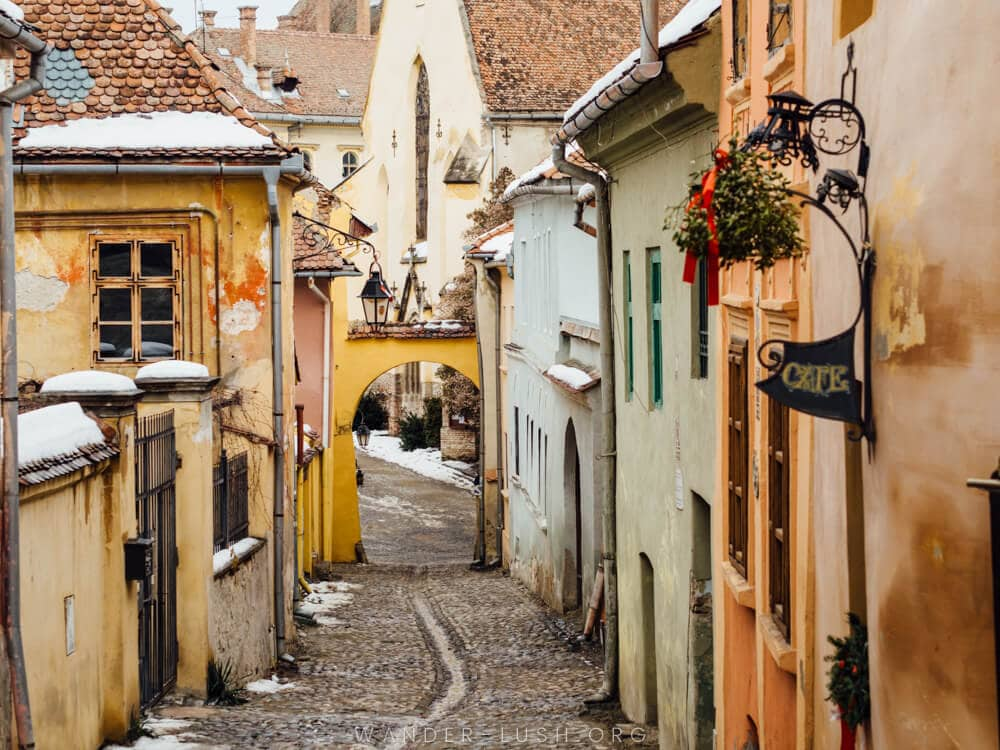

Sighișoara, județul Mureș


Poate că Evul Mediu a fost acuzat de
multe, ba chiar numit ”Epoca întunecată”,
dar noi știm că am rămas cu destule comori de pe urma lui. Sighișoara este
una dintre ele pentru că nu fără motiv această cetate medievală, înțesată
de turnuri, a purtat cu titlul de ”perla Transilvaniei”.
Aflată pe malul Târnavei Mari, mai are
astăzi doar 9 din cele 14 Turnuri
ale meșteșugarilor, dar noi nu ne-am face griji că asta ne lasă fără suficiente
obiective istorice cu care să ne umplem sejurul. Dacă nu ai ajuns încă să vezi
Sighișoara, prima impresie va fi aceea că ai fost teleportat într-o poveste
desprinsă
din Evul Mediu și că, din moment în moment, un cavaler călare îmbrăcat
în armură de oțel
îți poate tăia calea. Senzația va căpăta tot mai multă putere
pe măsură ce vei căuta
să vizitezi Turnul cu Ceas, considerat principalul obiectiv
turistic care adăpostește,
printre altele, Sala Armelor și Camera de Tortură.
Click aici pentru a vă întoarce la pagina inițială.